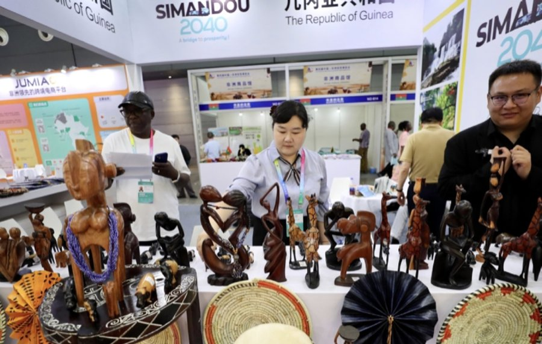
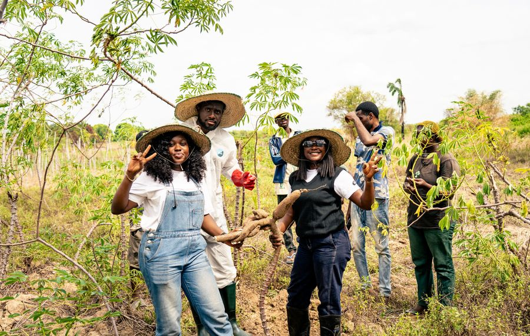
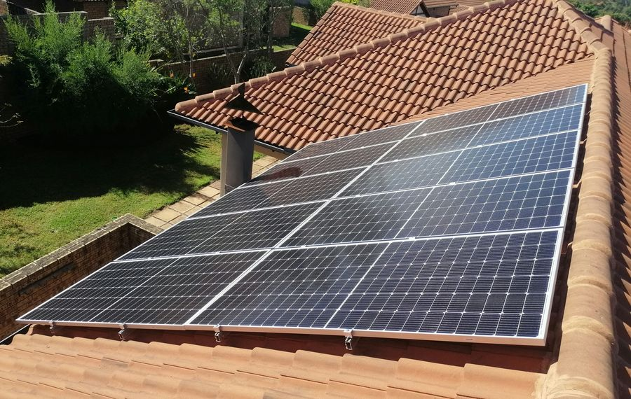

China–Africa cooperation
CACBUA — the World and Africa Cross-Border United Association — supports economic development, policy understanding, cultural exchange, and practical institutional cooperation between China and Africa.
CACBUA leadership meeting with Nigerian President Bola Tinubu, part of efforts to strengthen Nigeria–China relations through investment and business cooperation.
China–Africa trade, tracked
Who we are
CACBUA supports informed engagement by connecting policy understanding with institutional relationships, sector knowledge, and practical cross-border cooperation.
Grounded analysis across six established China–Africa research topics.
Pathways for missions, chambers, trade offices, and ministries.
People-to-people exchange that builds durable working relationships.
Trade & investment
Current, sourced market intelligence on where China–Africa trade and investment are moving — general context, not a claim of CACBUA involvement.

Zero-tariff treatment now covers 53 African countries with diplomatic ties to China, effective since 1 May 2026.
Source: China State Council, published May 1, 2026
Explore opportunity →Nigeria–China trade rose 35% to $18B in H1 2026 following the zero-tariff rollout; Chinese imports from Nigeria alone surged 80% to $2.3B.
Source: Chinese Ambassador to Nigeria, via allAfrica, Aug 17, 2026
Explore opportunity →
Dried chilies, coffee, cashews, and other African agricultural goods gained new unified duty-free access to the Chinese market.
Source: CGTN, published Jul 27, 2026
Explore opportunity →Chinese automaker Chery acquired Nissan’s former Rosslyn assembly plant near Pretoria, South Africa, targeting local EV/hybrid production from mid-2027.
Source: Washington Post / BNN Bloomberg (AP), published Aug 12, 2026
Explore opportunity →Huayou Cobalt’s $400M lithium sulphate plant at Zimbabwe’s Arcadia Mine began production in Q1 2026 — described as Africa’s first facility of its kind.
Source: MarketScreener, 2026
Explore opportunity →
Chinese solar panel exports to Africa rose 83% y/y in April 2026; African imports of Chinese panels grew 48% from 2024 to 2025.
Source: African Sustainability Matters, 2026
Explore opportunity →These are external, independently sourced market developments — not CACBUA programs or activity. Where CACBUA has its own related service or initiative to add, it will be labeled separately as CACBUA content.
Explore cooperation pathways →Research and policy
CACBUA's six established subject areas, retained as clear research topics.
Skills development, innovation, and knowledge exchange.
→ 02Policy interpretation and practical cross-border trade insight.
→ 03Institutional cooperation and enabling infrastructure.
→ 04Industry engagement and sector-specific opportunities.
→ 05People-to-people exchange and stronger mutual understanding.
→ 06Agricultural cooperation, commodities, and market development.
→Current information
Coverage from CACBUA's participation in the Mex Export trade event, part of the association's ongoing engagement with cross-border trade platforms.
Read more →A documented meeting between Nigeria's trade office and its Shanghai counterpart, part of CACBUA's institutional cooperation record.
Read more →CACBUA's presence at the Home Appliance Expo, connecting Chinese manufacturers with African distribution and retail interest.
Read more →Cooperation
CACBUA creates pathways for institutions and organizations seeking practical China–Africa cooperation.
Start a conversationFor organizations seeking structured participation and shared opportunity.
For missions, chambers, trade offices, ministries, and associations.
For organizations requiring informed cross-border context and guidance.
Events

The third annual China/Africa Medical Equipment & Tech Expo, with attendance from healthcare sectors, associations, and media worldwide.

Nigeria Trade Asian Office visited Shanghai Trade Office for talks on further cooperation, organized by founder Mr. Okpozae.
As associated organizer, CACBUA welcomed international designers, industry experts, media, and official representatives.
Leadership perspective
“Our service is to assist cross-border development in both countries.”
Geoffrey OkpozaeFounder & President, CACBUA
Meet the Founder